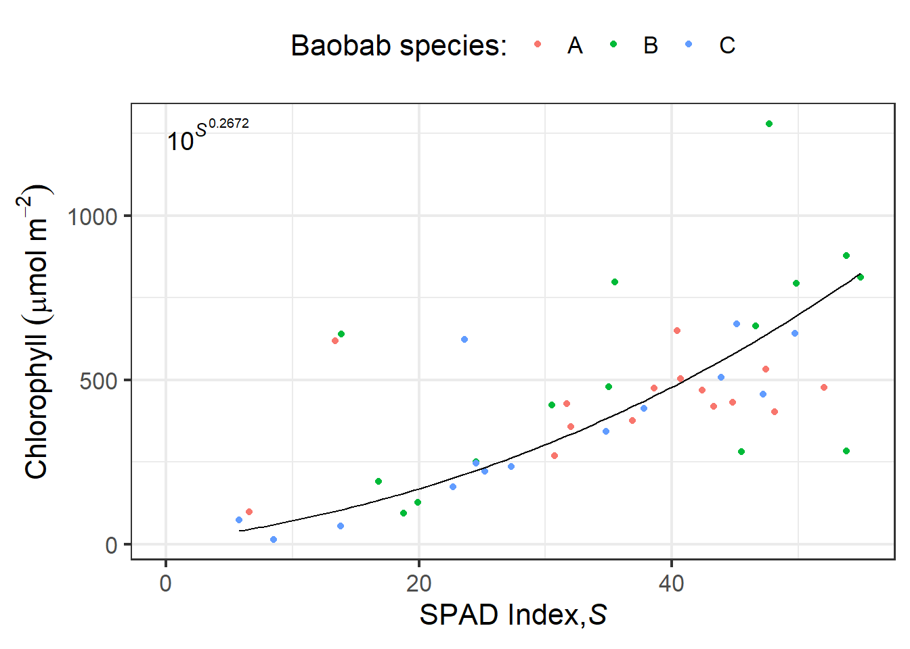

The optical properties of whole leaves depend on the pigment content and the localization of these pigments, but there is also a large contribution of tissue structural properties that through light scattering increase the distance travelled by photons within leaves (Johnsen 2011; Lee 2010). Uneven distribution of pigments has also consequences for the relationship between concentration and light absorption. Absorption of photons by chlorophylls and auxiliary pigments is a pre-requisite for photosynthesis. Non-photosynthetic pigments are also important as they can screen potentially damaging UV photons. Photoreceptors are in too low a concentration to significantly affect optical properties of leaves, but the properties of light that inpings on them is affected by these properties interacting with their localization.
Cross-section of an ivy (Hedera canariensis) leaf. Scanning electron miscroscope image of a cryofractured leaf (from Aphalo 1991).
Many studies have indicated that UV-absorbing compounds in the vacuoles of epidermal cells have a major role in regulating internal UV levels. However, absorbing compounds located in cell walls and other cell parts can also be important in controlling internal UV penetration. These compounds are usually not easily extractable, and consequently one cannot rely on extracts alone when judging the effectiveness of UV-screening protection. Furthermore, both wax deposits and pubescence may be very important for protection against ultraviolet radiation (Karabourniotis and Bornman 1999; Holmes and Keiller 2002). The amount of protection can also vary over time, even during the day, probably as a result of changes in flavonoid concentrations (Barnes et al. 2008; Veit et al. 1996). The expression of these protection mechanisms is plastic, i.e., subject to acclimation. Thus, expression of leaf properties conferring protection also depend on environmental factors, in particular prior exposure to UV radiation or strong visible radiation, and large differences in genotype and phenotype exist among plant species and to a lesser extent within species.
As absorbed radiative energy contributes to the energy balance of leaves, the evolution of leaf optical properties in hot climates has been influenced by features that help prevent excessive warming of leaves (Lee 2010). In addition to tissue and cell damage by extreme temperatures, the rates of transpiration, photosynthesis and respiration depend on temperature.
This chapter is organized broadly around optical properties relevant to photosynthesis, screening of UV radiation and the energy balance of plants. We also describe the application of similar methods to the description of the optical properties of flowers.
7.2 Whole leaves
7.2.1 Spectroscpy
Spectroscopy of reflected radiation is the basis of optical remote sensing, in the case of drones, aeroplanes and satellites. Spectroscopy can be also a very useful measuring approach at the scale of individual plants and plant organs, including leaves. Reflectance, absorptance and transmittance of whole leaves and flower petals and sepals informs about combined effects of pigments and structural features.
It is important to remember when studying plants that light scattering plays a very important role in determining optical properties (Lee 2010). One possible way of quantifying scattering within leaves is to measure the time a very brief laser pulse takes to travel across a leaf, from adaxial to abaxial epidermis (L.O. Björn, personal communication). A way of visualizing the contribution to light scattering of the water-air interfaces within leaves is to infiltrate the air spaces with water in a vacuum chamber. If we infiltrate a variegated leaf, the white parts lacking chlorophyll turn almost transparent and the dark green regions containing chlorophyll become semi-transparent with a green tint. This demonstrates that scattering increases the probability of photons being absorbed. This increase results from lengthening the path of photons within the leaf and a concomitant increase in the probability of each photon being intercepted by a pigment molecule.
The surface of leaves varies among species and also through acclimation within a single genotype or even parts of an individual. Not only pubescence and whitish wax deposits on the surface of leaves affect reflectance, also the shine of the surface resulting from its smoothness affects how reflectance varies with the light incidence angle. Phenomena at the surface interface affect light passage in both directions, both in-going and out-going photons. This is probably why only leaves that receive light equally from both sides have similar surface and epidermal properties in adaxial and abaxial epidermes. Surface properties also affect wettability, accumulation of dirt and interactions with insects and microbes. In the case of flowers, not only pigments play a role in their colours. In some cases, very-small-scale surface properties contribute to enhancing their colours, or even creating them by interference effects. In general, colours generated through interference by micro-structure vary with the angle between a light beam and the surface, e.g., petal or leaf epidermis. We see this incidence-abgle-dependence as iridescence. For example, the colour of tulip flowers is based on pigments but intensified by structural features at the surface.
For spectroscopic measurement of optical properties we need a light source, references, and a spectrometer. Measurements are relative to reference standards, e.g., white standard tiles with very high and known spectral reflectance across or waveelngths of interest. The light source must have a stable or consistent enough light output to allow comparable sequential measurements. As reference standards are used for each measurement, the spectrometer needs to be calibrated for wavelength and a linearization function available. However, an irradiance calibration is not needed. There are two approaches in common use to collect the reflected light, a probe with a narrow aperture angle, or an integrating sphere. With a probe, we measure only part the the reflected light, collinear with the incident light beam, but possibly at different angles to the surface of the leaf. When using an integrating sphere, the incident beam is most frequently is within 10 degrees of normal to the surface, and the integrating sphere collects radiation reflected in all directions. These to approaches provide measurements that are not comparable. Furthermore, the effect of physical surface properties is different.
The best material for reference “tiles” is Spectralon, a fluoropolymer. It exhibits highly Lambertian behavior, and very high reflectance (>0.95 from 250 nm to 2500 nm). Spectralon is fairly tolerant of handling, thus in this respect better than Barium sulphate in the form of compacted powder or sprays. Sets of Spectralon tiles with different calibrated reflectance values are commercially available, with tiles of different strengths having each a nearly constant reflectance across a wide range of wavelengths. Their drawback is that they are expensive, even at small sizes, and that must the handled carefully so as not to affect their calibrated reflection properties. For measuring low reflectance values accurately, the use of “grey” tiles of comparable reflectance to the object measured is recommended, as using a white tile assumes perfect linearity of the spectrometer’s response. Grey Spectralon tiles contain some carbon black to decrease reflectance. A set of four 1.25” tiles, white, and grayscale costs over 1\,500€ uncalibrated, and nearly 2\,000€ with a traceable calibrating (early 2025 prices).
While for accurate (spectral) reflectance measurements we need reference tiles, for transmittance, in practice we normally block the light path or remove of the measured object out of the path, once again assuming linearity. A calibrated neutral density (ND) filter can play a similar role as a grey tile for reflectance. Absorptance, is calculated by difference from the measured spectral reflectance and transmittance. See chapter Radiation-matter Interactions and Optics for the theory and calculation details.
Alternative white references
Less expensive than a Spectralon standard is a slab of commercial grade fluoropolymer PTFE (e.g., Teflon) >6 mm thick. In fact, Spectralon is made of synthered pure PTFE powder, with enhanced scattering properties. Only high quality non-recycled PTFE is pure enough to be used as a white reference. The need for a thick slab of solid PTFE to subtitute for Spectralon is because it scatters less. The best approach is to use a Spectralon tile as a reference to measure the PTFE tile, i.e., transferring the calibration from a known-good standard to much cheaper working standards. All references must scatter the light they reflect, so their surface must look mat rather than shiny. To prevent specular reflections from the surface of PTFE slabs, their surface must be wet-sanded with a fine grit (e.g., 600) sand paper. A solid PTFE slab can be washed to clean it, and even sanded again if its surface gets marred.
A substitute for a calibrated black tile can be based on black flocking as used on the inside of optical instruments, special black paint used for this same purpose, or special artist’s black paints. Paints must provide a fully mat, or scattering, surface once dry. As with PTFE slabs, the reflectance can be compared to that of calibrated black standard. Artists’ paint sold under the name of Black 3.0 from Culture Hustle has very high absorbance in both visible and NIR regions of the spectrum (This supplier has provided me with spectral data showing that the blackness of Black 3.0 extends into the NIR.) Black 4.0 also from Culture Hustle might also work as it is even less reflective in the visible, but I lack spectral data for it and its surface has been reported as fragile. Musou Black (available here)[https://www.musoublack.com/] is NIR reflective but might be useful in VIS. There is a compromise, as the more pigment a paint contains the more fragile the painted surface becomes. Black 3.0 is non-toxic while Musou black is reported to have an obnoxious smell. As long as spectral reflectance is known, a grey reference can be used with additional simple calculations. White paints on the other hand, are in many cases unsuitable as they frequently contain fluorescent pigments to enhance their apparent reflectivity, thus modify the spectrum of the incident light that they reflect.
Of course, using secondary standards will always degrade accuracy compared to using calibrated Spectralon tiles.
7.2.2 Optical estimation of chlorophyll content
As explained above, both pigments and scattering affect transmittance in a heterogeous medium such as leaves. A simple measurement of leaf transmittance at a wavelength where chlorophyll absorbs strongly enough provides a rough estimate of the concentration of chlorophyll, that can be used with a suitable case-specific calibration. This requires very simple equipment, but is rather impractical as readings are highly dependent scattering within leaves. Two commercially available instruments, the SPAD-502Plus (Konica Minolta), CCM-200 (Opti-Sciences) and the Dualex 4.0 (METOS, Pessl Instruments) apply a correction based on the transmittance in the NIR, where leaves have very low absorptance and scattering predominates. The Dualex 4 measures transmittance at a wavelength in the NIR (near 710 nm, i.e., close to the so-called “red edge”), thus outside the region of maximum absorption of chlorophylls, using an even longer wavelength (near 820 nm) as reference for scattering. In contrast, the CCM-200 uses 653 nm and 931 nm, and the SPAD-502 uses the very similar 650 nm and 940 nm. So these instruments measure absorbance in the red where chlorophyll absorption is higher than at 710 nm, while using a reference in the NIR. In all cases, using a reference-based correction for scattering makes the calibration against chlorophyll concentration less dependent on leaf anatomy and species. Thus, for within-experiment comparisons, in many cases it is possible to rely on calibrations that are only instrument dependent (Markwell, Osterman, and Mitchell (1995)). Still, for accurate measurements expressed as chlorophyll concentration per unit leaf area, a calibration against photometric measurements in leaf extracts can be necessary. The values returned by the SPAD instrument are in arbitrary units and their relationship to concentration is slightly curvilinear. The Dualex returns approximate concentration values in \mu g\, cm^{-2} based on a built-in generic, and thus, approximate calibration. The relationship between these estimates and true concentration is linear in the case of the Dualex.
Principle of operation
A small light source and a light detector located on opposite sides of the leaf can provide an estimate of leaf transmittance. The simplest possible approach to estimate chlorophyll concentration in vivo is to use a red LED (660 nm), or NIR (710 nm), and a silicon photodiode. A LED driver must ensure stable illumination and the current generated by the photodiode can be measured with a suitable ammeter, or using a shunt resistor, measured with a sensitive voltmeter. Such a device can in many cases assembled at minimal expense, and if used in a darkened room the only key requirement is consistent alignment between LED and photodiode. However, a calibration curve must be measured over a range of known chlorophyll concentrations extracted from leaves and repeated for each species, genotype and experiment, possibly even treatments. This approach works (e.g., Casal, Aphalo, and Sánchez (1987) and ?fig-BROCHE) but because of the need of frequent calibrations, it is tedious in practice.
The device used by Casal, Aphalo, and Sánchez (1987) was crudely built using a wood cloth-peg into which holes were drilled to install a LED and a photodiode into opposite halves.
Figure 7.1
Most commercial instruments use this same approach but with two light sources, as described above, one used to measure the decrease in transmittance not attributable to chlorophyll (in NIR) and one to estimate this effect together with that attributable to chlorophyll (in red or nearby region). The principle remains the same, but using absorption of NIR as a reference makes calibrations less dependent on those leaf properties that affect absorption but are unrelated to the concentration of chlorophyll. These chlorophyll meters also have a small light-tight chamber to avoid interference from ambient light. To improve this separation even further, a wavelength selective filter on the photodiode can be used to isolate the wavelengths emitted by the LED(s) from those in ambient light. It should be mentioned here, that paired measurements in the red and NIR regions are also strongly recommended when measuring chlorophyll extracts in the lab with a spectrophotometer. The stability of Konika-Minolta SPAD-502 and Opti-Science CCM-200 readings among units and across species has been reviewed (Parry, Blonquist, and Bugbee (2014)). A significant effect of chloroplast accumulation on SPAD readings has been reported (Hoel and Solhaug (1998)), and should be taken into account when designing measuring protocols.
The variability of non-destructive in situ optical estimates is rather high making abundant replication important both for measurements and calibration curves (e.g., Figure 7.2). On ther other hand, measurements take only a few seconds and being non-destructive, the same leaves can be repeatedly measured over their life.
Code
library(ggplot2)ggplot(Chl.data, aes(SPAD, ChlTot, color = species)) +geom_point() +stat_function(fun =function(x) {exp(log(10^(x^0.2672137)))}, color ="black", xlim =range(Chl.data$SPAD)) +annotate(geom ="text", x =0, y =1250, label ="10^italic(S)^0.2672", parse =TRUE, size =5, hjust ="inward") +labs(x =expression("SPAD Index,"*italic(S)), y =expression("Chlorophyll "*(mu*mol~m^{-2})),colour ="Baobab species:") +theme_bw(16) +theme(legend.position ="top")

Figure 7.2: Fitted SPAD-502 callibration curve for three species of Malagasy baobab (Adansonia). A. grandidieri, A. madagascariensis, A. rubrostipa. Reference total chlorophyll concentrations from extracts in N,N-dimethylformamide measured spectroscopically (see Randriamanana et al. 2012).
Variability and consequent uncertainty increase as the chlorophyll concentration increases because the number of target photons reaching the detector decreases making the relative effect of other optical and electronic disturbances larger. In the Dualex 4.0, the measurement of transmittance at the shoulder rather than at the top of the peak of absorption decreases this problem. Being the basic principle simple, several competing devices are available for measuring chlorophyll in vivo . For example, this is one of the parameters measured by the Walz LSA-250leaf state analizer using the same approach as in the Dualex, and by the Opti-Science MPM-100 multi pigment meter. I NEED TO FIND OUT WHAT WAVELENGTHS ARE USED BY THE MPM-100, possibly also close to 710 nm. The functions of these instruments dependent on using chlorophyll fluorescence as a reporter of UV screening are described in a later section.
The SPAD-502, CCM-200 and Dualex-4 are good examples of two frequently used approaches, but given the usefulness of in-vivo chlorophyll measurements, there are additional instruments available. Opti-Sciences current CCM-200Plus chlorophyll meter, returns Chlorophyll Content Index (CCI) values. In contrast, Apogee’s extrenally almost identical MC-100 chlorophyll meter uses a built-in calibrations for multiple plant species, reporting area-based chlorophyll concentrations in \mathrm{\mu mol}\,\mathrm{m}^2 of leaf surface, while also able to report results in SPAD and CCI units. Other SPAD quasi-clones are available: Hansatech CL-01 Chlorophyll Meter (660 nm, 940 nm), using its own uncalibrated units for expressing concentration values, In addition, several different chlorophyll meters are available from different suppliers, including AliExpress for a low price of 300 to 500 €. Most of them, look externally like clones of the SPAD, and return values in SPAD units. Seevral of them, even if sold under different brand names, and showing slight variations in external appearance seem to be functionally almost identical. A recent study suggests that at some of these cheap instruments are able to provide as good estimates of chlorophyll concentrations as the SPAD-502 or the CCM-200 (Brown, Williams, and Dash (2022)). For a chlorophyll meter to provide readings in SPAD units consitent with those reported by the SPAD-502, they must use the same, or very similar, wavelengths to the SPAD-502.
Of course, spectral transmittance can be used to estimate chlorophyll concentration in vivo (e.g., Casal, Aphalo, and Sánchez (1987)). However, estimates from the simpler instruments described above seem to be as good once a calibration is used (Brown, Williams, and Dash (2022)).
It is also possible to estimate chlorophyll concentration from reflectance. This is possible as a result of light scattering. Some of the photons entering the leaf and scattered within it will exit through the same epidermis through which they entered into the leaf, creating a spectral signature in the apparent reflectance dependent on the concentration of chlorophyll. This approach is in practice used when transmittance cannot be measured, for example, in remote sensing.
7.2.3 Monitoring of chloroplast accumulation
7.3 Fibre-optic measurements
This method was introduced for visible light by T. C. Vogelmann and Björn (1984), and has been adapted for ultraviolet radiation by Vogelmann, Bornman and coworkers (Bornman and Vogelmann 1988; DeLucia, Day, and Vogelman 1992; Cen and Bornman 1993). The method cannot be used for absolute measurements due to uncertainties about the local conditions and the acceptance angle at the fibre tip, but it has yielded valuable comparisons between attenuation of different wavelengths and the resulting depth profile of radiation within leaves. Fibre probes can be made less angle-dependent (García-Pichel 1995), but then become too bulky for measurements inside plant leaves.
NEEDS DETAILS AND CHECKING OF ANY MORE RECENT USES.
7.4 Chlorophyll fluorescence as a reporter of UV screening
7.4.1 Old text (to merge below or delete)
This method has so far only been employed by excitation and measurement at the leaf surface. It thus mainly monitors penetration of UV radiation through the epidermis into the chlorophyll-containing mesophyll, i.e. transmission through the epidermis. Chlorophyll fluorescence excited by blue light usually serves as a standard (Bilger et al. 1997; Bilger, Johnsen, and Schreiber 2001), more recently excitation by red light has also been used to avoid interference by anthocyanins (Goulas et al. 2004). The principle has been used in commercial instruments that assess the UV absorbance of the epidermis (Kolb et al. 2005; Goulas et al. 2004). The first portable instruments, UVA-PAM and Dualex FLAV used UV-A radiation for excitation rather than UV-B radiation, but now there is at least one instrument, Dualex HCA, measuring UV-B absorbance.
In principle, chlorophyll fluorescence could also be used for monitoring UV penetration in another way, by recording fluorescence in cross-sections of leaves, as has already been done for the penetration of visible light (T. C. Vogelmann and Han 2000; T. C. Vogelmann and Evans 2002; Gould et al. 2002).
7.4.2 Introduction
For protection against the detrimental action of UV radiation plants use UV absorbing compounds which are located primarily in external tissues such as the epidermis of leaves. There, they act as filters, or “screens”, protecting the sensitive targets of UV radiation in the tissues below. The extent of this protection is strongly dependent on environmental conditions (Pescheck & Bilger 2020), especially exposure to UV-B radiation, high light and low temperature, but also nitrogen deficiency and high CO2 concentrations enhance the synthesis and accumulation of UV screening compounds. In addition, screening may change during the development of leaves. Therefore, it is a priori unknown if two different leaves of the same species display also the same UV protection. However, for the reproducibility and interpretation of experiments testing the UV sensitivity of plants, it is important to know the amount of radiation absorbed in the epidermis before it can reach sensitive targets within the leaf. On the other hand, the effects of the environment on the accumulation of screening pigments can be much easier studied, when the latter can be determined in intact plant leaves.
First determinations of the depth to which UV radiation penetrates into a leaf were accomplished using fine quartz fibres, which were slowly led through a leaf (Bornman and Vogelmann 1988). This technique is very elaborate, requiring, e.g., a precise measurement of the depth of penetration, such that only very few laboratories in the world were able to apply it. Furthermore, the technique is destructive and requires rather stable research objects. It cannot be used with mosses or algae.
A method restricted to even fewer plants species in which large-enough pieces of epidermis can be peeled or dissected is to directly measure spectral transmittance of the isolated epidermis with a spectrometer ((BarnesXXX?)). This not only involves the in many cases difficult task of separating the epidermis, but also maintaining its integrity during the course of the measurements.
The drawbacks of these methods are avoided by a technique, which uses chlorophyll fluorescence excitation by a UV measuring beam (Bilger et al. 1997). Based on the measuring principle described below, several commercially available devices were developed, of which the Dualex Scientific originally manufactured by Force A (France) in various versions, has been the most popular in recent years. This technique takes advantage of the high transmittance of the epidermis in the visible region, including those of the chlorophyll fluorescence.
7.4.3 UV-induced chlorophyll fluorescence as a reporter
The measuring principle of all devices basing on chlorophyll fluorescence excitation depends on two preconditions. First, the chlorophyll fluorescence intensity is proportional to the irradiance absorbed by the chlorophyll and a yield factor, which is dependent on the state of photosystem II. (To be correct, also the state of PS I may have a certain influence. This is, however, only relevant at high excitation densities, which are not used here. Therefore, PS I fluorescence contributes with a constant fraction to the fluorescence intensity.) As long as the electrons transferred by PSII to the primary acceptor QA do not accumulate there, the yield factor remains constant. This is the case when the light received by PS II is sufficiently weak. Then, the fluorescence intensity is dependent only on the number of quanta reaching the chloroplasts.
Normalized absorbance spectra of chlorophyll a (isolated from Asterocapsa nidulans (N.L. Gardner) Komárek & Komárková-Legnerová) and chlorophyll b (purchased from Sigma-Aldrich) in 100% methanol.
Second, chlorophyll must absorb UV radiation. This is indeed the case, as absorption spectra of chlorophyll a and b reveal (?fig-chl-bilger). Given these facts, the fluorescence yield of a (UV) measuring beam depends on the fraction of it that reaches chloroplasts. In higher plant leaves, the measuring beam must pass the epidermis, which is largely free of chloroplasts, before chlorophyll fluorescence can be excited. Hence, UV absorbing compounds located in epidermal vacuoles or cell walls will affect fluorescence emission. In lower plants, such as ferns and algae, UV absorbing compounds located in external cell walls can fulfil this function (e.g., Pescheck et al. 2014). Since fluorescence emission is also affected by independent factors such as the measuring geometry, the amount of chlorophyll in the leaves, scattering properties of the anatomical structure of the leaves, or in some measuring arrangements simply by the sample size, a reference beam is used which is similarly affected by these factors but not absorbed by screening pigments. In the early measuring apparatus, a blue reference beam was used (Bilger et al. 1997, 2001), since it was assumed that at this wavelength scattering within the leaf would be most similar to the scattering of the UV measuring beam. Later it was recognized that the fluorescence yield of a blue beam is dependent on the amount of the xanthophyll cycle carotenoids in the chloroplasts (Pfündel et al. 2007, Nichelmann et al. 2016), and a red reference beam is used nowadays. ?fig-fluor-principle-bilger shows a scheme of the measuring principle as implemented in the UVA-PAM and Dualex. In the UVA-PAM, both excitation and measurement take place on the same epidermis, while in the Dualex, the fluorescence is detected on the opposite surface of the leaf. Both excitation beams have to pass the epidermis. UV absorbing pigments in the epidermis reduce the intensity of the UV beam, whereas this is not the case for the red reference beam. The latter as well as the emitted chlorophyll fluorescence will not be absorbed in the epidermis and be similarly scattered by it.
Schematic illustration of the measuring principle showing the cross section of the upper cells of a leaf. UV-absorbing compounds in the epidermis attenuate the UV excitation beam, whereas the red excitation beam and the chlorophyll fluorescence excited by the two beams are passing the epidermis unhindered. The ratio between UV- and red-excited fluorescence, F(UV) / F(R), is dependent on the amount of UV-absorbing compounds between the leaf surface and the chloroplasts.
We need a whole-leaf cross section and to distinguish the approach currently shown, used in the UVA-PAM and the approach used in the Dualex with fluorescence assessed on the opposite side of the leaf. We need also to find-out what approch is used ib the LSA-2050, the MPM-100 and other readily available chlorophyll meters.
7.4.4 Calculating UV transmittance
The ratio of the UV-induced fluorescence to the red-induced fluorescence (F(UV) / F(R)) is also dependent on the intensities of the measuring beams. In order to calculate a transmittance of the UV beam, it is necessary to know F(UV) / F(R) induced in the absence of any absorbing pigments with identical measuring beam intensities. For most investigated plants, such a state cannot be reached easily. Therefore, various approaches have been used to come as close as possible to such a reference value for 100% transmittance. In our hands, Epipremnum aureum growing in a room far away from a window showed 100% UV-A transmittance and high UV-B transmittance on the adaxial leaf side. However, such high transmittances are extremely exceptional. In the vast majority of plant species, it would be necessary to remove the epidermis, which again is not possible in most plants. However, there exist species where at least the abaxial epidermis can be removed, and in some cases, this is even possible with the adaxial epidermis. Especially plants with succulent or at least slightly succulent leaves are amenable. To these plants belong many species from the family Crassulaceae, but also Vicia faba, Pisum sativum and Viola tricolor. Primary leaves from grasses, such as Hordeum vulgare, proved successful for peeling the epidermis. At growth conditions strongly inducing the formation of screening compounds, these may accumulate also in mesophyll cells (Agati et al. 2011). Therefore, shade acclimated leaves grown at optimal temperatures should be used for the 100% transmittance standard.
Fluorescence excitation ratios determined with a Xe-PAM fluorometer (Walz, Effeltrich, Germany; Bilger et al. 1997) from 5 dicotyledoneous species (circles) and 6 varieties from 4 monocotyledoneous species grown from fall 2000 to spring 2001 at Ås, Norway, in a phytotron at 21°C (closed symbols) or at 9°C (open symbols). Excitation ratios using a UV-A beam (left panel) or a UV-B beam (right panel) with reference to a broad blue-green (BG) excitation beam were determined from abaxial sides of leaves before (x-axis) and after (y-axis) removal of the epidermis. The following species and varieties were used: Arabidopsis thaliana acc. Columbia, Pisum sativum subsp. sativum cv. axiphium, Brassica napus cv. Bambu, Brassica rapa cv. Agneta, Vicia faba cv. Witkiem, Hordeum vulgare cv. Frost, H. vulgare cv. Tyra, Secale cereale cv. Danko, S. cereale cv. Rogo, Triticale cv. Prego, Triticum aestivum cv. Bastian. Unpublished data by Mari Rolland and Wolfgang Bilger.
When using Poaceae, one has to bear in mind that these often contain ferulic acid derivatives in their cell walls (Harris and Hartley 1980). Hence, removing the epidermis of species from this family may not remove all UV, especially UV-B, protection (?fig-fluo-ratios-bilger). Besides cell wall located absorbing compounds, also scattering properties of the mesophyll cells and potentially the chlorophyll a/b ratio may affect the F(UV) / F(R) ratio. These and other still unknown factors may contribute to the observed variability of the F(UV) /F(R) ratios from epidermis free leaves of different species, even when selecting leaves from non-inducing conditions. This is demonstrated in Fig. 3, which shows data for F(UV) / F(BG) ratios from epidermis free leaves of various species, plotted against the same ratios obtained with intact leaves. The lower the fluorescence ratio of the intact leaf was, the lower was also the ratio of the epidermis free leaf. In addition, also the maximal fluorescence ratios of the epidermis free leaves vary among the different species. Since one is forced quite often to use the reference ratio from a different species for the investigated species, some caution is necessary in the interpretation of the absolute transmittance values calculated. An uncertainty of about 10% transmittance due to an inappropriate reference value must be accepted. As an alternative, it is possible to use isolated chloroplasts as reference. In these cases, chloroplasts should be applied to a filter paper or a glass fibre filter in a concentration sufficiently high to mimic the chlorophyll content per leaf area in the investigated species (Bilger et al. 1997, Nichelmann et al. 2017). This approach is needed, e.g., when algae or ferns are investigated (Pescheck et al. 2014).
In the most popular device, the Dualex Scientific instrument, the reference value of F(UV) / F(R) for 100% transmittance has been set at the factory and cannot be changed afterwards. Unfortunately, this value may vary among different instruments, as evidenced recently in an instrument intercomparison. Advantages of the non-destructive measurements Using the available portable devices rapid measurements are possible characterizing the photoprotection of leaves as well as their content of protective compounds. For the former trait, the expression as transmittance of the protective tissue/layer is most helpful. Transmittance characterizes the percentage of incident damaging radiation that reaches the chloroplasts. These contain one the most prominent targets of UV-A and UV-B radiation, the water-splitting complex of PS II (Hakala et al. 2005). With this information, it is even possible to compare after an experimental UV exposure the inflicted damage with the amount of radiation reaching the target. This calculation has been used to show that the basic sensitivity of PS II was not different in macroalgae species containing or lacking screening compounds in their cell walls (Pescheck et al. 2014).
From transmittance, absorbance can be calculated, which according to the Lambert-Beer law is proportional to the concentration of absorbing compounds. Hence, what has been called the log fluorescence excitation ratio (log FER; Goulas et al 2004) can be used as a proxy for the amount of UV absorbing pigments in the epidermis. Since the Dualex instrument uses an LED emitting in the UV-A spectral region, where preferentially flavonoids are absorbing, the absorbance parameter calculated by the instrument at this wavelength was termed “Flav value”. However, one should be aware that each UV-absorbing compound adds to the total screening according its own extinction coefficient, which may strongly vary among different compounds. Therefore, the true concentration of specific compounds in the protective layer cannot be simply inferred without further wet chemical analysis. Although usage of the term Flav suggests that (mainly) flavonoids may be responsible for the screening at 365-375 nm, it is also possible that solely hydroxycinnamic acids are used as photoprotectants in this spectral region. For sunflower (Helianthus annuus L.) it was shown that the leaves contain only trace amounts of flavonoids and the screening is solely due to chlorogenic acid and its derivatives (Stelzner et al. 2019), which have their spectral absorbance maximum at 330 nm and display only residual absorption around 365 nm. Accordingly, these compounds must have a much higher concentration to reach the same UV-A protection than a flavonoid such as, e.g., quercetin derivatives.
The non-destructive nature of the measurements allows the repeated observation the identical leaf. This allows following the acclimation kinetics of leaves after a change in specific environmental conditions. This is extremely helpful in investigating signal transduction pathways and the evaluation of various environmental conditions, which may trigger the biosynthesis, and accumulation of protective compounds.
The ease of measurements and the portability of the devices allows extensive measurements under natural conditions. E.g., the UV-A-PAM-fluorometer (Gademann Instruments, Germany) has been used to follow protection against natural gradients in UV-B radiation (Barnes et al. 2015). Solanki et al. (2019) observed the time course of UV screening over a year in leaves of Vaccinium vitis-ideae.
7.5 Additional parameters
The measuring wavelength can be adjusted to the absorption spectra of the compounds of interest. With the advent of the availability of LEDs emitting in the UV-B, it has become possible manufacturing instruments capable to measure epidermal transmittance around 310 nm. At this wavelength region, both, hydroxycinnamic acid derivatives and flavonoids absorb radiation. Furthermore, at this wavelength the damaging potential of UV radiation is even larger and the determination of protection is closer to the most important stress factor.
When using green light for the measuring beam, anthocyanins can be addressed, which have an absorption maximum in this wavelength region and which serve as photoprotectants in the PAR (Gould 2004, Nichelmann et al. 2017, Pfündel et al. 2007). Applying this rationale, the Dualex Scientific instrument provides also an anthocyanin index. However, this index needs to be considered with caution. Absorptance of a leaf in the green spectral region is much lower than in the red region. Therefore, decreases in chlorophyll content will first affect absorptance and, hence, fluorescence excitation, in the green region, before the absorptance of the red reference beam is affected. With decreasing chlorophyll content, the excitation ratio F(green) / F(red) will decline even in the absence of anthocyanins (see Nichelmann et al. 2017). In principle, the same considerations should apply also for the UV spectral region, since there absorbance of chlorophyll is lower than at the absorbance peak in the red. However, the difference in absorbance to the red region is much lower for UV than for green light. Therefore, F(UV) / F(red) should be much less affected by changes in chlorophyll content than F(green) / F(red).
In the blue wavelength region, carotenoids located in the pigment protein complexes in the thylakoid membrane of the chloroplasts compete with chlorophyll for excitation energy. Whereas lutein and neoxanthin transfer almost 100% the absorbed excitation to chlorophyll, -carotene is much less efficient (around 30%) and violaxanthin and its de-epoxidation products antheraxanthin and zeaxanthin are entirely unable to transfer energy to chlorophyll (Caffari et al. 2001). The latter pigments show an enhanced content in chloroplasts relative to chlorophyll when plants are growing at high light (Thayer & Björkman 1989). This enhancement can be as high as a factor of 5, when plants grown in full sunlight are compared to plants grown in deep shade. Hence, the relative absorption of blue light by the pigments of the violaxanthin cycle and the according loss of excitation energy for chlorophyll will increase in high light grown leaves. Accordingly, the relative excitation efficiency at around 470 nm can be used as an indicator of the pool size of the violaxanthin cycle pigments (Nichelmann et al 2016). Recently, it has been shown in leaves of rocket (Diplotaxis tenuifolia), that the excitation efficiency at 470 nm follows also the dynamic changes in carotenoid content in single leaves when these are exposed to changes in irradiance (Khoramizadeh et al. 2024). It needs to pointed out, that at this wavelength range only a relative excitation efficiency can be determined, which cannot be described in terms of transmittance. Nevertheless, comparison to the maximal excitation efficiency observed in shade acclimated leaves is possible and relative trends can be deduced. With the LSA-2050 device (Walz GmbH, Germany), which contains also an LED for excitation at 450 nm, such measurements have become recently easily possible.
In addition to the pigment detection using chlorophyll fluorescence, the available devices use also measurements of transmittance through the leaves to quantify chlorophyll content. For this purpose, a wavelength absorbed by chlorophyll and one that is too long to be absorbed by chlorophyll are used. The latter serves as a reference, allowing correction for non-specific scattering properties of the leaves. It has proven advantageous to use a wavelength at the long wavelength tail of the chlorophyll absorption spectrum, which enhances the linear range of the relationship between absorbance and pigment content (Cerovic et al. 2012).
A further helpful information for field measurements is the use of a GPS sensor for locating the measured leaf. Using this technique allowed to map the pigment contents of grapevine leaves and use this information to draw a map of nutrient requirements in the respective vineyard (Cerovic….) .
Recently, also sensors for leaf orientation and angle were included in a device, which combined with data on the date and location makes it possible to deduce the relative sun exposure of the investigated leaf.
7.6 Precautions and pitfalls
When using chlorophyll fluorescence for assessing the function of PS II, the short-term pre-illumination history and the simultaneous irradiation of the leaf are of utmost importance. For the measurement of epidermal transmittance, necessary precautions are much less severe. Since after darkening of a leaf rapid changes of the fluorescence are finished after a few minutes, measurements with devices, which use a sequential irradiation of the sample with the different measuring beams, can be accomplished without problem 2 min after darkening a leaf. With devices using quasi simultaneous irradiation with all measuring beams such as the Dualex instruments, in principle no dark acclimation of the leaves is needed. This is specifically useful in field investigations.
As is always the case with measuring instruments, calibration of the used devices should be checked. Ideally the device should be sent to the manufacturer in regular time intervals. For a control when a calibration at the manufacturer is needed again, standards can be used to compare the stability of the signals with time. A physical standard could be a plastic foil with fluorescence excitation and emission spectra similar to those of chlorophyll. Helpful are also plants grown under standardized conditions. For example, Vicia faba, or any other plant species from which the epidermis can be easily peeled, grown under low irradiance will provide a quite stable reference system. Intercomparison among several devices in regular time intervals is also helpful to detect any changes in the performance of an instrument.
The existence of diel time courses of UV screening in leaves has been demonstrated for several plant species (Barnes et al. 2016). Although these species seem rather an exception, the absence of such short term variations should always be checked. When these are observed, one should be careful before deducing an according rapid metabolisation of the responsible screening pigments.
With its introduction the fluorescence method was coined as a method for the determination of epidermal UV transmittance or epidermal UV screening. However, although the majority of UV protection is achieved by UV absorbing compounds located in the epidermis of leaves (see, e.g., Burchard et al. 2000), a contribution by compounds in the mesophyll cannot be excluded. This has become very obvious when investigating the screening properties of anthocyanins in Berberis thunbergii, a species in whose leaves the anthocyanins are only located in the mesophyll. Despite this location, screening of up to 50% of integrated solar irradiation was calculated (Nichelmann et al. 2017). After growth at conditions strongly inducing the accumulation of screening pigments, leaves from which the epidermis was removed also showed reduced UV fluorescence excitation efficiency. Hence, also compounds located in vacuoles at the side of chloroplasts may provide light protection, albeit with a lower efficiency than compounds in epidermal vacuoles. Strong light scattering within leaves may one of the mechanisms by which this is achieved.
When leaves with reduced chlorophyll contents are investigated, fluorescence excitation ratios can be affected as already highlighted above. This is especially obvious with fluorescence excitation in the green absorption gap of chlorophyll, but may at further reduced chlorophyll contents also affect UV excitation ratios. Since human vision is especially sensitive in the green spectral region, where anthocyanins have their absorption maximum, human eyes are well equipped to detect anthocyanins in leaves. Hence, if an instrument is indicating the presence of anthocyanins in leaves, which are obviously greenish, further checks of plausibility are strongly recommended.
Aphalo, Pedro José. 1991. “Interactions in Stomatal Function.” PhD thesis, University of Edinburgh, Edinburgh; University of Edinburgh. http://hdl.handle.net/1842/14758.
Barnes, Paul W, Stephan D Flint, James R Slusser, Wei Gao, and Ronald J Ryel. 2008. “Diurnal Changes in Epidermal UV Transmittance of Plants in Naturally High UV Environments.”Physiologia Plantarum 133: 363–72. https://doi.org/10.1111/j.1399-3054.2008.01084.x.
Bilger, W., T. Johnsen, and U. Schreiber. 2001. “UV-Excited Chlorophyll Fluorescence as a Tool for the Assessment of UV-Protection by Epidermins of Plants.”Journal of Experimental Botany 52: 2007–14. https://doi.org/10.1093/jexbot/52.363.2007.
Bilger, W., M. Veit, L. Schreiber, and U. Schreiber. 1997. “Measurement of Leaf Epidermal Transmittance of UV Radiation by Chlorophyll Fluorescence.”Physiologia Plantarum 101 (4): 754–63. https://doi.org/10.1111/j.1399-3054.1997.tb01060.x.
Bornman, J. F., and T. C. Vogelmann. 1988. “Penetration by Blue and UV Radiation Measured by Fiber Optics in Spruce and Fir Needles.”Physiologia Plantarum 72 (4): 699–705. https://doi.org/10.1111/j.1399-3054.1988.tb06368.x.
Brown, Luke A., Owen Williams, and Jadunandan Dash. 2022. “Calibration and Characterisation of Four Chlorophyll Meters and Transmittance Spectroscopy for Non-Destructive Estimation of Forest Leaf Chlorophyll Concentration.”Agricultural and Forest Meteorology 323 (August): 109059. https://doi.org/10.1016/j.agrformet.2022.109059.
Casal, J. J., P. J. Aphalo, and R. A. Sánchez. 1987. “Phytochrome Effects on Leaf Growth and Chlorophyll Content in Petunia Axillaris.”Plant, Cell and Environment 10 (6): 509–14. https://doi.org/10.1111/j.1365-3040.1987.tb01829.x.
Cen, Yan-Ping, and Janet F. Bornman. 1993. “The Effect of Exposure to Enhanced UV-b Radiation on the Penetration of Monochromatic and Polychromatic UV-b Radiation in Leaves of Brassica Napus.”Physiologia Plantarum 87 (3): 249–55. https://doi.org/10.1111/j.1399-3054.1993.tb01727.x.
DeLucia, E. H., T. A. Day, and T. C. Vogelman. 1992. “Ultraviolet-B and Visible Light Penetration into Needles of Two Species of Subalpine Conifers During Foliar Development.”Plant, Cell and Environment 15 (8): 921–29. https://doi.org/10.1111/j.1365-3040.1992.tb01024.x.
García-Pichel, F. 1995. “A Scalar Irradiance Fiber-Optic Microprobe for the Measurement of Ultraviolet Radiation at High Spatial Resolution.”Photochemistry and Photobiology 61: 248–54. https://doi.org/10.1111/j.1751-1097.1995.tb03967.x.
Goulas, Yves, Zoran G Cerovic, Aurélie Cartelat, and Ismaël Moya. 2004. “Dualex: A New Instrument for Field Measurements of Epidermal Ultraviolet Absorbance by Chlorophyll Fluorescence.”Applied Optics 43 (23): 4488–96. https://doi.org/10.1364/AO.43.004488.
Gould, Kevin S, Thomas C Vogelmann, Tao Han, and Michael J Clearwater. 2002. “Profiles of Photosynthesis Within Red and Green Leaves of .”Physiologia Plantarum 116 (1): 127–33. https://doi.org/10.1034/j.1399-3054.2002.1160116.x.
Hoel, Bernt Olav, and Knut AsbjØrn Solhaug. 1998. “Effect of Irradiance on Chlorophyll Estimation with the Minolta SPAD-502 Leaf Chlorophyll Meter.”Annals of Botany 82 (3): 389–92. https://doi.org/10.1006/anbo.1998.0683.
Holmes, M. G., and D. R. Keiller. 2002. “Effects of Pubescence and Waxes on the Reflectance of Leaves in the Ultraviolet and Photosynthetic Wavebands: A Comparison of a Range of Species.”Plant Cell and Environment 25 (1): 85–93. https://doi.org/10.1046/j.1365-3040.2002.00779.x.
Johnsen, Sonke. 2011. Optics of Life. University Press Group Ltd.
Karabourniotis, George, and Janet F. Bornman. 1999. “Penetration of UV-a, UV-b and Blue Light Through the Leaf Trichome Layers of Two Xeromorphic Plants, Olive and Oak, Measured by Optical Fibre Microprobes.”Physiologia Plantarum 105: 655–61. https://doi.org/10.1034/j.1399-3054.1999.105409.x.
Kolb, C. A., U. Schreiber, R. Gademann, and E. E. Pfündel. 2005. “UV-a Screening in Plants Determined Using a New Portable Fluorimeter.”Photosynthetica 43 (3): 371–77. https://doi.org/10.1007/s11099-005-0061-7.
Lee, David. 2010. Nature’s Palette: The Science of Plant Color. University of Chicago Press.
Markwell, John, John Osterman, and Jennifer Mitchell. 1995. “Calibration of the Minolta SPAD-502 Leaf Chlorophyll Meter.”Photosynthesis Research 46 (3): 467–72. https://doi.org/10.1007/BF00032301.
Parry, Christopher, J. Mark Blonquist, and Bruce Bugbee. 2014. “In Situ Measurement of Leaf Chlorophyll Concentration: Analysis of the Optical/Absolute Relationship.”Plant, Cell &Amp; Environment 37 (11): 2508–20. https://doi.org/10.1111/pce.12324.
Randriamanana, T., F. Wang, T. Lehto, and P. J. Aphalo. 2012. “Water Use Strategies of Seedlings of Three Malagasy Adansonia Species Under Drought.”South African Journal of Botany 81: 61–70. https://doi.org/10.1016/j.sajb.2012.05.005.
Veit, M., T. Bilger, T. Muhlbauer, W. Brummet, and K. Winter. 1996. “Diurnal Changes in Flavonoids.”Journal of Plant Physiology 148 (3-4): 478–82. https://doi.org/10.1016/S0176-1617(96)80282-3.
Vogelmann, T C, and J R Evans. 2002. “Profiles of Light Absorption and Chlorophyll Within Spinach Leaves from Chlorophyll Fluorescence.”Plant Cell and Environment 25: 1313–23. https://doi.org/10.1046/j.1365-3040.2002.00910.x.
Vogelmann, T C, and T Han. 2000. “Measurements of Gradients of Absorbed Light in Spinach Leaves from Chlorophyll Fluorescence Profiles.”Plant Cell and Environment 23: 1303–11. https://doi.org/10.1046/j.1365-3040.2000.00649.x.
Vogelmann, T. C., and L. O. Björn. 1984. “Measurement of Light Gradients and Spectral Regime in Plant Tissue with a Fiber Optic Probe.”Physiologia Plantarum 60: 361–68. https://doi.org/10.1111/j.1399-3054.1984.tb06076.x.
Source Code
---title: "Quantifying Optical Properties"subtitle: "Leaves and vegetation"author: - name: Wolfgang Bilger orcid: 0000-0001-7800-4210 affiliation: Christian-Albrechts-Universität zu Kiel - name: others---## Introduction to leaf opticsThe optical properties of whole leaves depend on the pigment content and the localization of these pigments, but there is also a large contribution of tissue structural properties that through light scattering increase the distance travelled by photons within leaves [@Johnsen2011; @Lee2010]. Uneven distribution of pigments has also consequences for the relationship between concentration and light absorption. Absorption of photons by chlorophylls and auxiliary pigments is a pre-requisite for photosynthesis. Non-photosynthetic pigments are also important as they can screen potentially damaging UV photons. Photoreceptors are in too low a concentration to significantly affect optical properties of leaves, but the properties of light that inpings on them is affected by these properties interacting with their localization.::: {label=fig-photo-cryofracture-hedera}{width=100%}Cross-section of an ivy (_Hedera canariensis_) leaf. Scanning electron miscroscope image of a cryofractured leaf [from @Aphalo1991].:::Many studies have indicated that UV-absorbing compounds in the vacuoles of epidermal cells have a major role in regulating internal UV levels. However, absorbing compounds located in cell walls and other cell parts can also be important in controlling internal UV penetration. These compounds are usually not easily extractable, and consequently one cannot rely on extracts alone when judging the effectiveness of UV-screening protection. Furthermore, both wax deposits and pubescence may be very important for protection against ultraviolet radiation [@Karabourniotis1999; @Holmes2002]. The amount of protection can also vary over time, even during the day, probably as a result of changes in flavonoid concentrations [@Barnes2008a; @Veit1996]. The expression of these protection mechanisms is plastic, i.e., subject to acclimation. Thus, expression of leaf properties conferring protection also depend on environmental factors, in particular prior exposure to UV radiation or strong visible radiation, and large differences in genotype and phenotype exist among plant species and to a lesser extent within species.As absorbed radiative energy contributes to the energy balance of leaves, the evolution of leaf optical properties in hot climates has been influenced by features that help prevent excessive warming of leaves [@Lee2010]. In addition to tissue and cell damage by extreme temperatures, the rates of transpiration, photosynthesis and respiration depend on temperature. This chapter is organized broadly around optical properties relevant to photosynthesis, screening of UV radiation and the energy balance of plants. We also describe the application of similar methods to the description of the optical properties of flowers.## Whole leaves### SpectroscpySpectroscopy of reflected radiation is the basis of optical remote sensing, in the case of drones, aeroplanes and satellites. Spectroscopy can be also a very useful measuring approach at the scale of individual plants and plant organs, including leaves. Reflectance, absorptance and transmittance of whole leaves and flower petals and sepals informs about combined effects of pigments and structural features.It is important to remember when studying plants that light scattering plays a very important role in determining optical properties [@Lee2010]. One possible way of quantifying scattering within leaves is to measure the time a very brief laser pulse takes to travel across a leaf, from adaxial to abaxial epidermis (L.O. Björn, personal communication). A way of visualizing the contribution to light scattering of the water-air interfaces within leaves is to infiltrate the air spaces with water in a vacuum chamber. If we infiltrate a variegated leaf, the white parts lacking chlorophyll turn almost transparent and the dark green regions containing chlorophyll become semi-transparent with a green tint. This demonstrates that scattering increases the probability of photons being absorbed. This increase results from lengthening the path of photons within the leaf and a concomitant increase in the probability of each photon being intercepted by a pigment molecule.The surface of leaves varies among species and also through acclimation within a single genotype or even parts of an individual. Not only pubescence and whitish wax deposits on the surface of leaves affect reflectance, also the shine of the surface resulting from its smoothness affects how reflectance varies with the light incidence angle. Phenomena at the surface interface affect light passage in both directions, both in-going and out-going photons. This is probably why only leaves that receive light equally from both sides have similar surface and epidermal properties in adaxial and abaxial epidermes. Surface properties also affect wettability, accumulation of dirt and interactions with insects and microbes. In the case of flowers, not only pigments play a role in their colours. In some cases, very-small-scale surface properties contribute to enhancing their colours, or even creating them by interference effects. In general, colours generated through interference by micro-structure vary with the angle between a light beam and the surface, e.g., petal or leaf epidermis. We see this incidence-abgle-dependence as iridescence. For example, the colour of tulip flowers is based on pigments but intensified by structural features at the surface.For spectroscopic measurement of optical properties we need a light source, references, and a spectrometer. Measurements are relative to reference standards, e.g., white standard tiles with very high and known spectral reflectance across or waveelngths of interest. The light source must have a stable or consistent enough light output to allow comparable sequential measurements. As reference standards are used for each measurement, the spectrometer needs to be calibrated for wavelength and a linearization function available. However, an irradiance calibration is not needed. There are two approaches in common use to collect the reflected light, a probe with a narrow aperture angle, or an integrating sphere. With a probe, we measure only part the the reflected light, collinear with the incident light beam, but possibly at different angles to the surface of the leaf. When using an integrating sphere, the incident beam is most frequently is within 10 degrees of normal to the surface, and the integrating sphere collects radiation reflected in all directions. These to approaches provide measurements that are **not comparable**. Furthermore, the effect of physical surface properties is different.The best material for reference "tiles" is Spectralon, a fluoropolymer. It exhibits highly Lambertian behavior, and very high reflectance ($>0.95$ from 250 nm to 2500 nm). Spectralon is fairly tolerant of handling, thus in this respect better than Barium sulphate in the form of compacted powder or sprays. Sets of Spectralon tiles with different _calibrated_ reflectance values are commercially available, with tiles of different strengths having each a nearly constant reflectance across a wide range of wavelengths. Their drawback is that they are expensive, even at small sizes, and that must the handled carefully so as not to affect their calibrated reflection properties. For measuring low reflectance values accurately, the use of "grey" tiles of comparable reflectance to the object measured is recommended, as using a white tile assumes perfect linearity of the spectrometer's response. Grey Spectralon tiles contain some carbon black to decrease reflectance. A set of four 1.25" tiles, white, and grayscale costs over $1\,500$€ uncalibrated, and nearly $2\,000$€ with a traceable calibrating (early 2025 prices).While for accurate (spectral) reflectance measurements we need reference tiles, for transmittance, in practice we normally block the light path or remove of the measured object out of the path, once again assuming linearity. A calibrated neutral density (ND) filter can play a similar role as a grey tile for reflectance. Absorptance, is calculated by difference from the measured spectral reflectance and transmittance. See chapter [_Radiation-matter Interactions and Optics_](optics.qmd) for the theory and calculation details.::: callout-tip# Alternative white referencesLess expensive than a Spectralon standard is a slab of commercial grade fluoropolymer PTFE (e.g., Teflon) >6 mm thick. In fact, Spectralon is made of synthered pure PTFE powder, with enhanced scattering properties. Only high quality non-recycled PTFE is pure enough to be used as a white reference. The need for a thick slab of solid PTFE to subtitute for Spectralon is because it scatters less. The best approach is to use a Spectralon tile as a reference to measure the PTFE tile, i.e., transferring the calibration from a known-good standard to much cheaper working standards. All references must scatter the light they reflect, so their surface must look mat rather than shiny. To prevent specular reflections from the surface of PTFE slabs, their surface must be wet-sanded with a fine grit (e.g., 600) sand paper. A solid PTFE slab can be washed to clean it, and even sanded again if its surface gets marred.A substitute for a calibrated black tile can be based on black flocking as used on the inside of optical instruments, special black paint used for this same purpose, or special artist's black paints. Paints must provide a fully mat, or scattering, surface once dry. As with PTFE slabs, the reflectance can be compared to that of calibrated black standard. Artists' paint sold under the name of _Black 3.0_ from [Culture Hustle](https://culturehustle.com/) has very high absorbance in both visible and NIR regions of the spectrum (This supplier has provided me with spectral data showing that the blackness of Black 3.0 extends into the NIR.) _Black 4.0_ also from Culture Hustle might also work as it is even less reflective in the visible, but I lack spectral data for it and its surface has been reported as fragile. _Musou Black_ (available here)[https://www.musoublack.com/] is NIR reflective but might be useful in VIS. There is a compromise, as the more pigment a paint contains the more fragile the painted surface becomes. _Black 3.0_ is non-toxic while _Musou black_ is reported to have an obnoxious smell. As long as spectral reflectance is known, a grey reference can be used with additional simple calculations. White paints on the other hand, are in many cases unsuitable as they frequently contain fluorescent pigments to enhance their apparent reflectivity, thus modify the spectrum of the incident light that they reflect.Of course, using secondary standards will always degrade accuracy compared to using calibrated Spectralon tiles. :::### Optical estimation of chlorophyll contentAs explained above, both pigments and scattering affect transmittance in a heterogeous medium such as leaves. A simple measurement of leaf transmittance at a wavelength where chlorophyll absorbs strongly enough provides a rough estimate of the concentration of chlorophyll, that can be used with a suitable case-specific calibration. This requires very simple equipment, but is rather impractical as readings are highly dependent scattering within leaves. Two commercially available instruments, the SPAD-502Plus (Konica Minolta), CCM-200 (Opti-Sciences) and the Dualex 4.0 (METOS, Pessl Instruments) apply a correction based on the transmittance in the NIR, where leaves have very low absorptance and scattering predominates. The Dualex 4 measures transmittance at a wavelength in the NIR (near 710 nm, i.e., close to the so-called "red edge"), thus outside the region of maximum absorption of chlorophylls, using an even longer wavelength (near 820 nm) as reference for scattering. In contrast, the CCM-200 uses 653 nm and 931 nm, and the SPAD-502 uses the very similar 650 nm and 940 nm. So these instruments measure absorbance in the red where chlorophyll absorption is higher than at 710 nm, while using a reference in the NIR. In all cases, using a reference-based correction for scattering makes the calibration against chlorophyll concentration _less_ dependent on leaf anatomy and species. Thus, for within-experiment comparisons, in many cases it is possible to rely on calibrations that are only instrument dependent (@Markwell1995). Still, for accurate measurements expressed as chlorophyll concentration per unit leaf area, a calibration against photometric measurements in leaf extracts can be necessary. The values returned by the SPAD instrument are in arbitrary units and their relationship to concentration is slightly curvilinear. The Dualex returns approximate concentration values in $\mu g\, cm^{-2}$ based on a built-in _generic_, and thus, approximate calibration. The relationship between these estimates and true concentration is linear in the case of the Dualex.::: callout-note# Principle of operationA small light source and a light detector located on opposite sides of the leaf can provide an estimate of **leaf transmittance**. The simplest possible approach to estimate chlorophyll concentration _in vivo_ is to use a red LED (660 nm), or NIR (710 nm), and a silicon photodiode. A LED driver must ensure stable illumination and the current generated by the photodiode can be measured with a suitable ammeter, or using a shunt resistor, measured with a sensitive voltmeter. Such a device can in many cases assembled at minimal expense, and if used in a darkened room the only key requirement is consistent alignment between LED and photodiode. However, a calibration curve must be measured over a range of known chlorophyll concentrations extracted from leaves and repeated for each species, genotype and experiment, possibly even treatments. This approach works (e.g., @Casal1987 and [@fig-BROCHE]) but because of the need of frequent calibrations, it is tedious in practice.::: {#fig-BROCHE-SPAD}The device used by @Casal1987 was crudely built using a wood cloth-peg into which holes were drilled to install a LED and a photodiode into opposite halves. :::Most commercial instruments use this same approach but with two light sources, as described above, one used to measure the decrease in transmittance not attributable to chlorophyll (in NIR) and one to estimate this effect together with that attributable to chlorophyll (in red or nearby region). The principle remains the same, but using absorption of NIR as a reference makes calibrations less dependent on those leaf properties that affect absorption but are unrelated to the concentration of chlorophyll. These chlorophyll meters also have a small light-tight chamber to avoid interference from ambient light. To improve this separation even further, a wavelength selective filter on the photodiode can be used to isolate the wavelengths emitted by the LED(s) from those in ambient light. It should be mentioned here, that paired measurements in the red and NIR regions are also strongly recommended when measuring chlorophyll extracts in the lab with a spectrophotometer. The stability of Konika-Minolta SPAD-502 and Opti-Science CCM-200 readings among units and across species has been reviewed (@Parry2014). A significant effect of chloroplast accumulation on SPAD readings has been reported (@Hoel1998), and should be taken into account when designing measuring protocols.:::The variability of non-destructive _in situ_ optical estimates is rather high making abundant replication important both for measurements and calibration curves (e.g., [@fig-spad-baobabs]). On ther other hand, measurements take only a few seconds and being non-destructive, the same leaves can be repeatedly measured over their life.```{r, echo=FALSE,include=FALSE,message=FALSE}library(ggpmisc)# read the data from Excel csv fileChl.data <-read.csv("data/SPAD-chl-callibration-baobabs.csv")# This is what I think is best and refer to in my e-mailChl.mod.log <-nls(log10(ChlTot) ~log10(10^(SPAD^beta1)),start=list(beta1=0.265), trace=TRUE, data=Chl.data)# summary(Chl.mod.log)``````{r}#| label: fig-spad-baobabs#| fig-cap: Fitted SPAD-502 callibration curve for three species of Malagasy baobab (_Adansonia_). _A. grandidieri, A. madagascariensis, A. rubrostipa_. Reference total chlorophyll concentrations from extracts in _N,N_-dimethylformamide measured spectroscopically [see @Randriamanana2012].library(ggplot2)ggplot(Chl.data, aes(SPAD, ChlTot, color = species)) +geom_point() +stat_function(fun =function(x) {exp(log(10^(x^0.2672137)))}, color ="black", xlim =range(Chl.data$SPAD)) +annotate(geom ="text", x =0, y =1250, label ="10^italic(S)^0.2672", parse =TRUE, size =5, hjust ="inward") +labs(x =expression("SPAD Index,"*italic(S)), y =expression("Chlorophyll "*(mu*mol~m^{-2})),colour ="Baobab species:") +theme_bw(16) +theme(legend.position ="top")```Variability and consequent uncertainty increase as the chlorophyll concentration increases because the number of target photons reaching the detector decreases making the relative effect of other optical and electronic disturbances larger. In the Dualex 4.0, the measurement of transmittance at the shoulder rather than at the top of the peak of absorption decreases this problem. Being the basic principle simple, several competing devices are available for measuring chlorophyll _in vivo_ . For example, this is one of the parameters measured by the Walz [LSA-250](https://www.walz.com/products/chl_p700/leaf-state-analyzer/) _leaf state analizer_ using the same approach as in the Dualex, and by the Opti-Science [MPM-100](https://www.optisci.com/mpm-100.html) multi pigment meter. **I NEED TO FIND OUT WHAT WAVELENGTHS ARE USED BY THE MPM-100**, possibly also close to 710 nm. The functions of these instruments dependent on using chlorophyll fluorescence as a reporter of UV screening are described in a later section. The SPAD-502, CCM-200 and Dualex-4 are good examples of two frequently used approaches, but given the usefulness of in-vivo chlorophyll measurements, there are additional instruments available. Opti-Sciences current CCM-200Plus chlorophyll meter, returns Chlorophyll Content Index (CCI) values. In contrast, Apogee's extrenally almost identical [MC-100]() chlorophyll meter uses a built-in calibrations for multiple plant species, reporting area-based chlorophyll concentrations in $\mathrm{\mu mol}\,\mathrm{m}^2$ of leaf surface, while also able to report results in SPAD and CCI units. Other SPAD quasi-clones are available: Hansatech [CL-01](https://www.hansatech-instruments.com/product/cl-01-chlorophyll-content-meter/) Chlorophyll Meter (660 nm, 940 nm), using its own uncalibrated units for expressing concentration values, In addition, several different chlorophyll meters are available from different suppliers, including AliExpress for a low price of 300 to 500 €. Most of them, look externally like clones of the SPAD, and return values in SPAD units. Seevral of them, even if sold under different brand names, and showing slight variations in external appearance seem to be functionally almost identical. A recent study suggests that at some of these cheap instruments are able to provide as good estimates of chlorophyll concentrations as the SPAD-502 or the CCM-200 (@Brown2022). For a chlorophyll meter to provide readings in SPAD units consitent with those reported by the SPAD-502, they must use the same, or very similar, wavelengths to the SPAD-502.Of course, spectral transmittance can be used to estimate chlorophyll concentration in vivo (e.g., @Casal1987). However, estimates from the simpler instruments described above seem to be as good once a calibration is used (@Brown2022).It is also possible to estimate chlorophyll concentration from reflectance. This is possible as a result of light scattering. Some of the photons entering the leaf and scattered within it will exit through the same epidermis through which they entered into the leaf, creating a spectral signature in the apparent reflectance dependent on the concentration of chlorophyll. This approach is in practice used when transmittance cannot be measured, for example, in remote sensing. ### Monitoring of chloroplast accumulation## Fibre-optic measurementsThis method was introduced for visible light by @Vogelmann1984, and has been adapted for ultraviolet radiation by Vogelmann, Bornman and coworkers [@Bornman1988; @DeLucia1992; @Cen1993]. The method cannot be used for absolute measurements due to uncertainties about the local conditions and the acceptance angle at the fibre tip, but it has yielded valuable comparisons between attenuation of different wavelengths and the resulting depth profile of radiation within leaves. Fibre probes can be made less angle-dependent [@Garcia-Pichel1995], but then become too bulky for measurements inside plant leaves.NEEDS DETAILS AND CHECKING OF ANY MORE RECENT USES.## Chlorophyll fluorescence as a reporter of UV screening### Old text (to merge below or delete)This method has so far only been employed by excitation and measurement at the leaf surface. It thus mainly monitors penetration of UV radiation through the epidermis into the chlorophyll-containing mesophyll, i.e. transmission through the epidermis. Chlorophyll fluorescence excited by blue light usually serves as a standard [@Bilger1997; @Bilger2001], more recently excitation by red light has also been used to avoid interference by anthocyanins [@Goulas2004]. The principle has been used in commercial instruments that assess the UV [absorbance]{acronym-label="absorbance" acronym-form="singular+short"} of the epidermis [@Kolb2005; @Goulas2004]. The first portable instruments, *UVA-PAM* and *Dualex FLAV* used UV-A radiation for excitation rather than UV-B radiation, but now there is at least one instrument, *Dualex HCA*, measuring UV-B absorbance.In principle, chlorophyll fluorescence could also be used for monitoring UV penetration in another way, by recording fluorescence in cross-sections of leaves, as has already been done for the penetration of visible light [@Vogelmann2000; @Vogelmann2002; @Gould2002].### IntroductionFor protection against the detrimental action of UV radiation plants use UV absorbing compounds which are located primarily in external tissues such as the epidermis of leaves. There, they act as filters, or "screens", protecting the sensitive targets of UV radiation in the tissues below. The extent of this protection is strongly dependent on environmental conditions (Pescheck & Bilger 2020), especially exposure to UV-B radiation, high light and low temperature, but also nitrogen deficiency and high CO2 concentrations enhance the synthesis and accumulation of UV screening compounds. In addition, screening may change during the development of leaves. Therefore, it is a priori unknown if two different leaves of the same species display also the same UV protection. However, for the reproducibility and interpretation of experiments testing the UV sensitivity of plants, it is important to know the amount of radiation absorbed in the epidermis before it can reach sensitive targets within the leaf. On the other hand, the effects of the environment on the accumulation of screening pigments can be much easier studied, when the latter can be determined in intact plant leaves.First determinations of the depth to which UV radiation penetrates into a leaf were accomplished using fine quartz fibres, which were slowly led through a leaf (Bornman and Vogelmann 1988). This technique is very elaborate, requiring, e.g., a precise measurement of the depth of penetration, such that only very few laboratories in the world were able to apply it. Furthermore, the technique is destructive and requires rather stable research objects. It cannot be used with mosses or algae.A method restricted to even fewer plants species in which large-enough pieces of epidermis can be peeled or dissected is to directly measure spectral transmittance of the isolated epidermis with a spectrometer (@BarnesXXX). This not only involves the in many cases difficult task of separating the epidermis, but also maintaining its integrity during the course of the measurements. The drawbacks of these methods are avoided by a technique, which uses chlorophyll fluorescence excitation by a UV measuring beam (Bilger et al. 1997). Based on the measuring principle described below, several commercially available devices were developed, of which the Dualex Scientific originally manufactured by Force A (France) in various versions, has been the most popular in recent years. This technique takes advantage of the high transmittance of the epidermis in the visible region, including those of the chlorophyll fluorescence. ### UV-induced chlorophyll fluorescence as a reporterThe measuring principle of all devices basing on chlorophyll fluorescence excitation depends on two preconditions. First, the chlorophyll fluorescence intensity is proportional to the irradiance absorbed by the chlorophyll and a yield factor, which is dependent on the state of photosystem II. (To be correct, also the state of PS I may have a certain influence. This is, however, only relevant at high excitation densities, which are not used here. Therefore, PS I fluorescence contributes with a constant fraction to the fluorescence intensity.) As long as the electrons transferred by PSII to the primary acceptor QA do not accumulate there, the yield factor remains constant. This is the case when the light received by PS II is sufficiently weak. Then, the fluorescence intensity is dependent only on the number of quanta reaching the chloroplasts.::: {label=fig-chl-bilger}{width=80%}Normalized absorbance spectra of chlorophyll _a_ (isolated from _Asterocapsa nidulans_ (N.L. Gardner) Komárek & Komárková-Legnerová) and chlorophyll _b_ (purchased from Sigma-Aldrich) in 100% methanol.:::Second, chlorophyll must absorb UV radiation. This is indeed the case, as absorption spectra of chlorophyll _a_ and _b_ reveal (@fig-chl-bilger). Given these facts, the fluorescence yield of a (UV) measuring beam depends on the fraction of it that reaches chloroplasts. In higher plant leaves, the measuring beam must pass the epidermis, which is largely free of chloroplasts, before chlorophyll fluorescence can be excited. Hence, UV absorbing compounds located in epidermal vacuoles or cell walls will affect fluorescence emission. In lower plants, such as ferns and algae, UV absorbing compounds located in external cell walls can fulfil this function (e.g., Pescheck et al. 2014). Since fluorescence emission is also affected by independent factors such as the measuring geometry, the amount of chlorophyll in the leaves, scattering properties of the anatomical structure of the leaves, or in some measuring arrangements simply by the sample size, a reference beam is used which is similarly affected by these factors but not absorbed by screening pigments. In the early measuring apparatus, a blue reference beam was used (Bilger et al. 1997, 2001), since it was assumed that at this wavelength scattering within the leaf would be most similar to the scattering of the UV measuring beam. Later it was recognized that the fluorescence yield of a blue beam is dependent on the amount of the xanthophyll cycle carotenoids in the chloroplasts (Pfündel et al. 2007, Nichelmann et al. 2016), and a red reference beam is used nowadays. [@fig-fluor-principle-bilger] shows a scheme of the measuring principle as implemented in the UVA-PAM and Dualex. In the UVA-PAM, both excitation and measurement take place on the same epidermis, while in the Dualex, the fluorescence is detected on the opposite surface of the leaf. Both excitation beams have to pass the epidermis. UV absorbing pigments in the epidermis reduce the intensity of the UV beam, whereas this is not the case for the red reference beam. The latter as well as the emitted chlorophyll fluorescence will not be absorbed in the epidermis and be similarly scattered by it. ::: {label=fig-fluor-principle-bilger}{width=80%}Schematic illustration of the measuring principle showing the cross section of the upper cells of a leaf. UV-absorbing compounds in the epidermis attenuate the UV excitation beam, whereas the red excitation beam and the chlorophyll fluorescence excited by the two beams are passing the epidermis unhindered. The ratio between UV- and red-excited fluorescence, F(UV) / F(R), is dependent on the amount of UV-absorbing compounds between the leaf surface and the chloroplasts.:::We need a whole-leaf cross section and to distinguish the approach currently shown, used in the UVA-PAM and the approach used in the Dualex with fluorescence assessed on the opposite side of the leaf. We need also to find-out what approch is used ib the LSA-2050, the MPM-100 and other readily available chlorophyll meters.### Calculating UV transmittanceThe ratio of the UV-induced fluorescence to the red-induced fluorescence (F(UV) / F(R)) is also dependent on the intensities of the measuring beams. In order to calculate a transmittance of the UV beam, it is necessary to know F(UV) / F(R) induced in the absence of any absorbing pigments with identical measuring beam intensities. For most investigated plants, such a state cannot be reached easily. Therefore, various approaches have been used to come as close as possible to such a reference value for 100% transmittance. In our hands, Epipremnum aureum growing in a room far away from a window showed 100% UV-A transmittance and high UV-B transmittance on the adaxial leaf side. However, such high transmittances are extremely exceptional. In the vast majority of plant species, it would be necessary to remove the epidermis, which again is not possible in most plants. However, there exist species where at least the abaxial epidermis can be removed, and in some cases, this is even possible with the adaxial epidermis. Especially plants with succulent or at least slightly succulent leaves are amenable. To these plants belong many species from the family Crassulaceae, but also Vicia faba, Pisum sativum and Viola tricolor. Primary leaves from grasses, such as Hordeum vulgare, proved successful for peeling the epidermis. At growth conditions strongly inducing the formation of screening compounds, these may accumulate also in mesophyll cells (Agati et al. 2011). Therefore, shade acclimated leaves grown at optimal temperatures should be used for the 100% transmittance standard. ::: {label=fig-fluo-ratios-bilger}{width=100%}Fluorescence excitation ratios determined with a Xe-PAM fluorometer (Walz, Effeltrich, Germany; Bilger et al. 1997) from 5 dicotyledoneous species (circles) and 6 varieties from 4 monocotyledoneous species grown from fall 2000 to spring 2001 at Ås, Norway, in a phytotron at 21°C (closed symbols) or at 9°C (open symbols). Excitation ratios using a UV-A beam (left panel) or a UV-B beam (right panel) with reference to a broad blue-green (BG) excitation beam were determined from abaxial sides of leaves before (x-axis) and after (y-axis) removal of the epidermis. The following species and varieties were used: Arabidopsis thaliana acc. Columbia, Pisum sativum subsp. sativum cv. axiphium, Brassica napus cv. Bambu, Brassica rapa cv. Agneta, Vicia faba cv. Witkiem, Hordeum vulgare cv. Frost, H. vulgare cv. Tyra, Secale cereale cv. Danko, S. cereale cv. Rogo, Triticale cv. Prego, Triticum aestivum cv. Bastian. Unpublished data by Mari Rolland and Wolfgang Bilger. :::When using Poaceae, one has to bear in mind that these often contain ferulic acid derivatives in their cell walls (Harris and Hartley 1980). Hence, removing the epidermis of species from this family may not remove all UV, especially UV-B, protection ([see also @fig-fluo-ratios-bilger]). Besides cell wall located absorbing compounds, also scattering properties of the mesophyll cells and potentially the chlorophyll a/b ratio may affect the F(UV) / F(R) ratio. These and other still unknown factors may contribute to the observed variability of the F(UV) /F(R) ratios from epidermis free leaves of different species, even when selecting leaves from non-inducing conditions. This is demonstrated in Fig. 3, which shows data for F(UV) / F(BG) ratios from epidermis free leaves of various species, plotted against the same ratios obtained with intact leaves. The lower the fluorescence ratio of the intact leaf was, the lower was also the ratio of the epidermis free leaf. In addition, also the maximal fluorescence ratios of the epidermis free leaves vary among the different species. Since one is forced quite often to use the reference ratio from a different species for the investigated species, some caution is necessary in the interpretation of the absolute transmittance values calculated. An uncertainty of about 10% transmittance due to an inappropriate reference value must be accepted. As an alternative, it is possible to use isolated chloroplasts as reference. In these cases, chloroplasts should be applied to a filter paper or a glass fibre filter in a concentration sufficiently high to mimic the chlorophyll content per leaf area in the investigated species (Bilger et al. 1997, Nichelmann et al. 2017). This approach is needed, e.g., when algae or ferns are investigated (Pescheck et al. 2014). In the most popular device, the Dualex Scientific instrument, the reference value of F(UV) / F(R) for 100% transmittance has been set at the factory and cannot be changed afterwards. Unfortunately, this value may vary among different instruments, as evidenced recently in an instrument intercomparison. Advantages of the non-destructive measurementsUsing the available portable devices rapid measurements are possible characterizing the photoprotection of leaves as well as their content of protective compounds. For the former trait, the expression as transmittance of the protective tissue/layer is most helpful. Transmittance characterizes the percentage of incident damaging radiation that reaches the chloroplasts. These contain one the most prominent targets of UV-A and UV-B radiation, the water-splitting complex of PS II (Hakala et al. 2005). With this information, it is even possible to compare after an experimental UV exposure the inflicted damage with the amount of radiation reaching the target. This calculation has been used to show that the basic sensitivity of PS II was not different in macroalgae species containing or lacking screening compounds in their cell walls (Pescheck et al. 2014). From transmittance, absorbance can be calculated, which according to the Lambert-Beer law is proportional to the concentration of absorbing compounds. Hence, what has been called the log fluorescence excitation ratio (log FER; Goulas et al 2004) can be used as a proxy for the amount of UV absorbing pigments in the epidermis. Since the Dualex instrument uses an LED emitting in the UV-A spectral region, where preferentially flavonoids are absorbing, the absorbance parameter calculated by the instrument at this wavelength was termed “Flav value”. However, one should be aware that each UV-absorbing compound adds to the total screening according its own extinction coefficient, which may strongly vary among different compounds. Therefore, the true concentration of specific compounds in the protective layer cannot be simply inferred without further wet chemical analysis. Although usage of the term Flav suggests that (mainly) flavonoids may be responsible for the screening at 365-375 nm, it is also possible that solely hydroxycinnamic acids are used as photoprotectants in this spectral region. For sunflower (Helianthus annuus L.) it was shown that the leaves contain only trace amounts of flavonoids and the screening is solely due to chlorogenic acid and its derivatives (Stelzner et al. 2019), which have their spectral absorbance maximum at 330 nm and display only residual absorption around 365 nm. Accordingly, these compounds must have a much higher concentration to reach the same UV-A protection than a flavonoid such as, e.g., quercetin derivatives. The non-destructive nature of the measurements allows the repeated observation the identical leaf. This allows following the acclimation kinetics of leaves after a change in specific environmental conditions. This is extremely helpful in investigating signal transduction pathways and the evaluation of various environmental conditions, which may trigger the biosynthesis, and accumulation of protective compounds. The ease of measurements and the portability of the devices allows extensive measurements under natural conditions. E.g., the UV-A-PAM-fluorometer (Gademann Instruments, Germany) has been used to follow protection against natural gradients in UV-B radiation (Barnes et al. 2015). Solanki et al. (2019) observed the time course of UV screening over a year in leaves of Vaccinium vitis-ideae. ## Additional parametersThe measuring wavelength can be adjusted to the absorption spectra of the compounds of interest. With the advent of the availability of LEDs emitting in the UV-B, it has become possible manufacturing instruments capable to measure epidermal transmittance around 310 nm. At this wavelength region, both, hydroxycinnamic acid derivatives and flavonoids absorb radiation. Furthermore, at this wavelength the damaging potential of UV radiation is even larger and the determination of protection is closer to the most important stress factor. When using green light for the measuring beam, anthocyanins can be addressed, which have an absorption maximum in this wavelength region and which serve as photoprotectants in the PAR (Gould 2004, Nichelmann et al. 2017, Pfündel et al. 2007). Applying this rationale, the Dualex Scientific instrument provides also an anthocyanin index. However, this index needs to be considered with caution. Absorptance of a leaf in the green spectral region is much lower than in the red region. Therefore, decreases in chlorophyll content will first affect absorptance and, hence, fluorescence excitation, in the green region, before the absorptance of the red reference beam is affected. With decreasing chlorophyll content, the excitation ratio F(green) / F(red) will decline even in the absence of anthocyanins (see Nichelmann et al. 2017). In principle, the same considerations should apply also for the UV spectral region, since there absorbance of chlorophyll is lower than at the absorbance peak in the red. However, the difference in absorbance to the red region is much lower for UV than for green light. Therefore, F(UV) / F(red) should be much less affected by changes in chlorophyll content than F(green) / F(red). In the blue wavelength region, carotenoids located in the pigment protein complexes in the thylakoid membrane of the chloroplasts compete with chlorophyll for excitation energy. Whereas lutein and neoxanthin transfer almost 100% the absorbed excitation to chlorophyll, -carotene is much less efficient (around 30%) and violaxanthin and its de-epoxidation products antheraxanthin and zeaxanthin are entirely unable to transfer energy to chlorophyll (Caffari et al. 2001). The latter pigments show an enhanced content in chloroplasts relative to chlorophyll when plants are growing at high light (Thayer & Björkman 1989). This enhancement can be as high as a factor of 5, when plants grown in full sunlight are compared to plants grown in deep shade. Hence, the relative absorption of blue light by the pigments of the violaxanthin cycle and the according loss of excitation energy for chlorophyll will increase in high light grown leaves. Accordingly, the relative excitation efficiency at around 470 nm can be used as an indicator of the pool size of the violaxanthin cycle pigments (Nichelmann et al 2016). Recently, it has been shown in leaves of rocket (Diplotaxis tenuifolia), that the excitation efficiency at 470 nm follows also the dynamic changes in carotenoid content in single leaves when these are exposed to changes in irradiance (Khoramizadeh et al. 2024). It needs to pointed out, that at this wavelength range only a relative excitation efficiency can be determined, which cannot be described in terms of transmittance. Nevertheless, comparison to the maximal excitation efficiency observed in shade acclimated leaves is possible and relative trends can be deduced. With the LSA-2050 device (Walz GmbH, Germany), which contains also an LED for excitation at 450 nm, such measurements have become recently easily possible. In addition to the pigment detection using chlorophyll fluorescence, the available devices use also measurements of transmittance through the leaves to quantify chlorophyll content. For this purpose, a wavelength absorbed by chlorophyll and one that is too long to be absorbed by chlorophyll are used. The latter serves as a reference, allowing correction for non-specific scattering properties of the leaves. It has proven advantageous to use a wavelength at the long wavelength tail of the chlorophyll absorption spectrum, which enhances the linear range of the relationship between absorbance and pigment content (Cerovic et al. 2012). A further helpful information for field measurements is the use of a GPS sensor for locating the measured leaf. Using this technique allowed to map the pigment contents of grapevine leaves and use this information to draw a map of nutrient requirements in the respective vineyard (Cerovic….) . Recently, also sensors for leaf orientation and angle were included in a device, which combined with data on the date and location makes it possible to deduce the relative sun exposure of the investigated leaf. ## Precautions and pitfallsWhen using chlorophyll fluorescence for assessing the function of PS II, the short-term pre-illumination history and the simultaneous irradiation of the leaf are of utmost importance. For the measurement of epidermal transmittance, necessary precautions are much less severe. Since after darkening of a leaf rapid changes of the fluorescence are finished after a few minutes, measurements with devices, which use a sequential irradiation of the sample with the different measuring beams, can be accomplished without problem 2 min after darkening a leaf. With devices using quasi simultaneous irradiation with all measuring beams such as the Dualex instruments, in principle no dark acclimation of the leaves is needed. This is specifically useful in field investigations. As is always the case with measuring instruments, calibration of the used devices should be checked. Ideally the device should be sent to the manufacturer in regular time intervals. For a control when a calibration at the manufacturer is needed again, standards can be used to compare the stability of the signals with time. A physical standard could be a plastic foil with fluorescence excitation and emission spectra similar to those of chlorophyll. Helpful are also plants grown under standardized conditions. For example, Vicia faba, or any other plant species from which the epidermis can be easily peeled, grown under low irradiance will provide a quite stable reference system. Intercomparison among several devices in regular time intervals is also helpful to detect any changes in the performance of an instrument. The existence of diel time courses of UV screening in leaves has been demonstrated for several plant species (Barnes et al. 2016). Although these species seem rather an exception, the absence of such short term variations should always be checked. When these are observed, one should be careful before deducing an according rapid metabolisation of the responsible screening pigments. With its introduction the fluorescence method was coined as a method for the determination of epidermal UV transmittance or epidermal UV screening. However, although the majority of UV protection is achieved by UV absorbing compounds located in the epidermis of leaves (see, e.g., Burchard et al. 2000), a contribution by compounds in the mesophyll cannot be excluded. This has become very obvious when investigating the screening properties of anthocyanins in Berberis thunbergii, a species in whose leaves the anthocyanins are only located in the mesophyll. Despite this location, screening of up to 50% of integrated solar irradiation was calculated (Nichelmann et al. 2017). After growth at conditions strongly inducing the accumulation of screening pigments, leaves from which the epidermis was removed also showed reduced UV fluorescence excitation efficiency. Hence, also compounds located in vacuoles at the side of chloroplasts may provide light protection, albeit with a lower efficiency than compounds in epidermal vacuoles. Strong light scattering within leaves may one of the mechanisms by which this is achieved. When leaves with reduced chlorophyll contents are investigated, fluorescence excitation ratios can be affected as already highlighted above. This is especially obvious with fluorescence excitation in the green absorption gap of chlorophyll, but may at further reduced chlorophyll contents also affect UV excitation ratios. Since human vision is especially sensitive in the green spectral region, where anthocyanins have their absorption maximum, human eyes are well equipped to detect anthocyanins in leaves. Hence, if an instrument is indicating the presence of anthocyanins in leaves, which are obviously greenish, further checks of plausibility are strongly recommended.
![]()